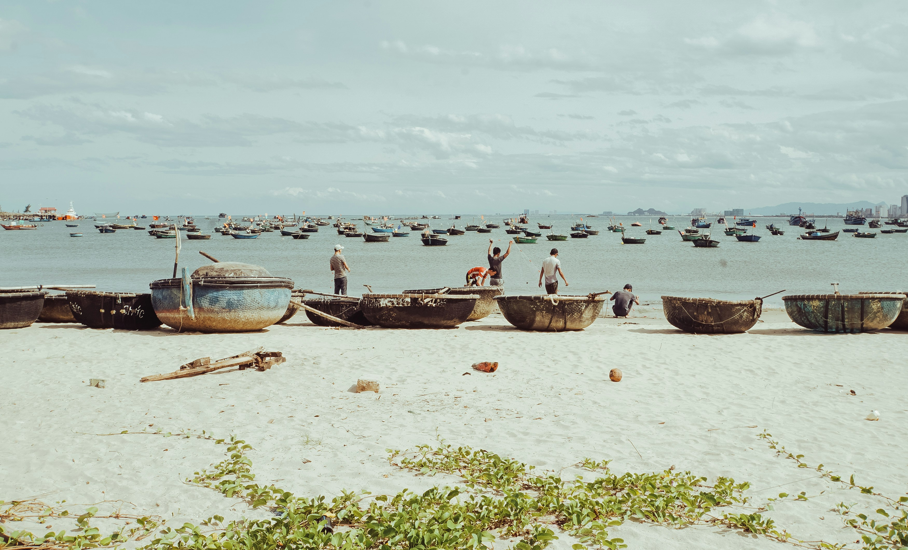
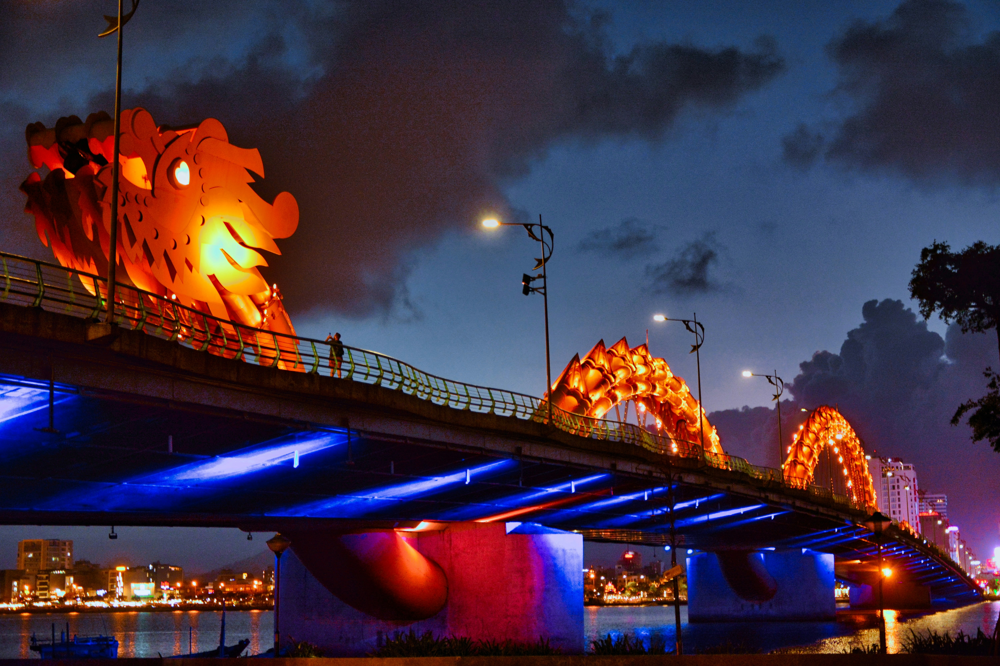

Location
My Khe Beach in Da Nang is a stunning stretch of coastline in central Vietnam. With its soft, golden sands and clear blue waters, it's a favorite spot for both locals and tourists. People come here to relax under the warm sun, swim in the gentle waves, and take long walks along the shore. The beach offers breathtaking views of the ocean, making it the perfect place to unwind and enjoy the beauty of nature.
The Dragon Bridge in Da Nang is a famous sightseeing spot that spans the Han River. Shaped like a dragon, it's one of the longest bridges in Vietnam. Every weekend, the bridge comes to life with vibrant lights, creating a dazzling display that lights up the night sky. It's a popular gathering place for locals and visitors alike, who come to watch the spectacle and take in the lively atmosphere. The Dragon Bridge is not just a bridge; it's a symbol of Da Nang's creativity and modernity.
Ba Na Hills is a scenic mountain retreat located just outside Da Nang. To reach the hills, visitors can take a thrilling cable car ride that offers panoramic views of the surrounding landscape. Once at the top, you'll find a variety of attractions, including Fantasy Park, a whimsical amusement park with rides and games for all ages. There's also a charming French Village where you can stroll through cobblestone streets and admire the architecture. One of the highlights of Ba Na Hills is the famous Golden Bridge, a stunning architectural marvel with giant hands that appear to be holding it up. It's a place where you can immerse yourself in nature, have fun with family and friends, and create unforgettable memories.